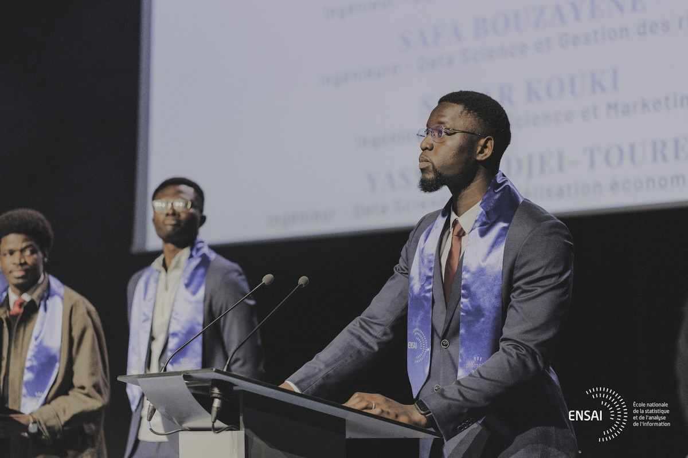
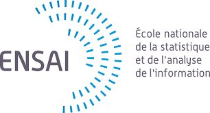

Économiste quantitatif & Data Scientist. Diplômé ENSAI (Rennes) et ENSAE (Dakar), je modélise les comportements économiques pour éclairer les politiques publiques — de la protection sociale à l'évaluation d'impact.


ENSAI · RennesCe qui me définit
Chaque modèle est une hypothèse à tester. Je soigne la méthodologie autant que les résultats.
Formé entre Dakar et Rennes, j'ai travaillé sur des données réelles d'Afrique subsaharienne avec des enjeux concrets.
Je traduis des modèles complexes en recommandations lisibles pour des décideurs non-techniques.
Co-auteur avec des chercheurs de l'Ohio State University et de l'ENSAE Dakar. Habitué aux équipes pluridisciplinaires.